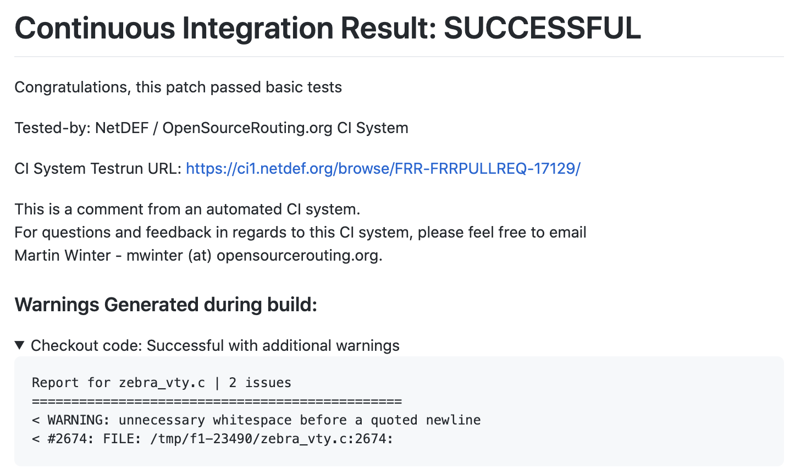
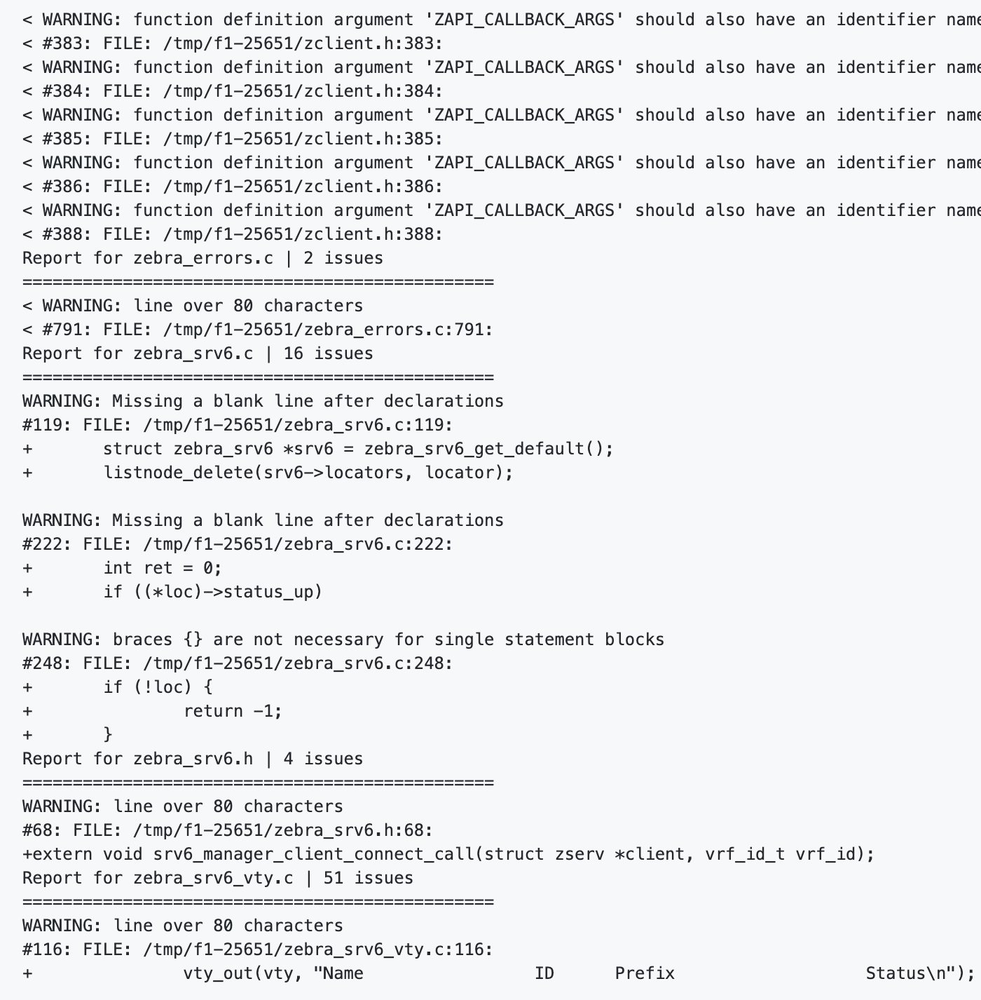

Introduction
You are network guys right? But you may not understand the internal architecture of FRRouting. FRRouting is the strongest routing platform around OSS. All of networking software engineer should understand it. When you will be a member of LINE corp's private cloud division. You are needed to extend Routing Protocol software to make their cloud platform stronger.
Debug log misc
#define C_RED "\x1b[31m"
#define C_GRN "\x1b[32m"
#define C_YEL "\x1b[33m"
#define C_DEF "\x1b[39m"
#define C_BG_RED "\x1b[41m"
#define C_BG_DEF "\x1b[49m"
#define marker_debug() { \
zlog_debug(C_YEL "%s:%d:%s()" C_DEF, __FILE__, __LINE__, __func__); \
} while(0)
#define marker_debug_msg(fmt) { \
char str[1000]; \
snprintf(str, sizeof(str), fmt); \
zlog_debug(C_YEL "%s:%d:%s() %s" C_DEF, __FILE__, __LINE__, __func__, str); \
} while(0)
#define marker_debug_fmsg(fmt, ...) { \
char str[1000]; \
snprintf(str, sizeof(str), fmt, __VA_ARGS__); \
zlog_debug(C_YEL "%s:%d:%s() %s" C_DEF, __FILE__, __LINE__, __func__, str); \
} while(0)
Daemon Startup
FRRではzebra, bgpd, isisd, etc.. 等のたくさんのデーモンが稼働する. これらのdaemonは frr/lib 配下に存在する共通のフレームワークを利用して 動作する. 要するに ospfd も isisd も実際はほとんど同じような起動方法 を行うことになっている. このchapterではその内容に関して整理する.
まずbgpdの起動方法をそれぞれみてみることにしよう. BGPは実際はpthreadを用いてmulti threadモデルで動作しているため 詳しい方式に関しては後ほど詳しく説明する. bgpdの起動の流れ(main関数)を簡単にしめす.
#include <zebra.h>
...
extern struct bgp_master *bm;
static struct frr_daemon_info bgpd_di;
...
int main(int argc, char **argv)
{
...
frr_preinit(&bgpd_di, argc, argv)
frr_opt_add(...)
while (1) {
//parse opt
}
...
bgp_master_init(frr_init(), buffer_size)
bgp_error_init()
bgp_vrf_init()
...
bgp_init(instance)
...
frr_config_fork()
bgp_gr_apply_running_config()
bgp_pthreads_run()
frr_run(bm->master)
}
Function frr_preinit
まず frr_preinit を呼び出すことでFRR上でのデーモン情報を初期化する.
FRRのデーモンは共通して, config, backup-config, running-config vty-port番号,
protocol番号, logger, yang-tree 等々の情報を持つが, それらの情報は
struct frr_daemon_info に記録されている.
新しく daemon を追加しようとする開発者でなければ,
基本的にはこの構造体を理解する必要はないと思われる.
その後, bgp_master_init(), bgp_error_init() 等のbgpd固有の初期化関数を
実行する. この部分はそれぞれのdaemonごとに固有の処理を行うため, 今は
強く意識する必要はない.
Function frr_init
frr_init 関数は, struct thread_master* を返す.
それぞれの daemon はこの threadmasterを用いて非同期イベントループを
ぶん回す.
これだけなら簡単だが, BGPdとかはベットでpthreadもつかったりしているので すごく複雑になっているようにみえる.
Function frr_config_fork
そして frr_config_fork() を実行する.
このタイミングでdaemonは必要に応じて daemonize fork をしたりする.
daemonize 処理のタイミングでSignalハンドラの処理等も色々と行う.
FRRのdeamonはこの辺をかなりwrapした実装になっているので, Signal処理や
TTY周りなどで不可解に感じたらこの辺をよく読んでみると良い.
このタイミングに loggerの初期化もしているはず. 詳しくはここにも書いてある. http://docs.frrouting.org/projects/dev-guide/en/latest/logging.html
Function frr_run
最後に frr_run() を実行して, これで初めて FRR のdaemonの起動が開始する.
frr_run は内部で, VTYの起動を行う, libfrr の multi threading framework
を開始させる. multi threading framework の開始部分を簡単に省略すると
以下のようになっている.
voi frr_run(struct thread_master *master)
{
frr_vty_serv();
...
struct thread thread;
while (thread_fetch(master, &thread))
thread_call(&thread)
}
FRRのMulti thread frameworkは Event駆動型のMulti Thread Frameworkであり, それぞれのEventごとにいthreadを起動させることができる.
Multi Thread Framework
Multi Thread Frameworkに関してのより詳しい説明は以下に示されている. Process Architecture
ここからは thread, threadmaster という用語を用いて構造を簡単に整理する. この thread は libeventでいう Event または Task のことを示す. 公式docいわく, threadmaster はそのまま threadmaster と読んで, thread のことを task と読んでいるようなのでそうやって説明する.
多分 thread という単位でたくさんの処理をイベントごとに登録することができて, それが実態になった物のことを task と読んでいるんだと理解している.
threadmaster は struct thread_master で表現されている.
この構造体は, global state objectで, thread のコンテキスト等を保持している.
それぞれのdaemon ごとに一つの threadmaster が存在している.
Daemonの起動時には小さな task を設定し, それが起因してたくさんの複雑な処理が 開始し始めるようになっている. 以下にtaskの種類を示す
| name | description |
|---|---|
THREAD_READ | ファイル記述子が読み取り可能になるのを待ってから実行する |
THREAD_WIRTE | ファイル記述子が書き込み可能になるのを待ってから実行する |
THREAD_TIMER | スケジュールされてから一定時間が経過した後に実行される |
THREAD_EVENT | 何かしらのイベント起因で実行される, Event自体のタイプとセット起動する物だと理解している. たとえば bgpd は FSM(Finite State Model)のフレームワークの上に実装されているけど, それぞれのイベントごとに実行されるtaskはこのtypeで表現されている(はず). Event Typeはintで表現されている. |
THREAD_READY | レディキューのタスクに内部的に使用されるタイプ(まったくわかっていない) |
THREAD_UNUSED | 意味不明j |
THREAD_EXECUTE | 実行中を表すタイプ. 実行されるタスクは全てこのtypeに実行直前に書き換えられる. |
例えば tcpのecho server を複数のclientに対して実施しようとした時. server-fd (listening socket) と accepted-fd (client peer socket) の二種類が存在する. このようなケースの時, それぞれの eventごとに非同期にうまく並行処理をしたい時はい可能のように書くはず.
struct thread_masgter m;
int client_send_func(void *)
{
int ret = write(client_fd, buf, buflen)
return ret;
}
int client_read_func(void *)
{
int ret = read(client_fd, buf, sizeof(buf));
if (ret < 0) {
return -1;
}
thread_add_write(m, client_send_func, NULL, client_fd, NULL);
return 0;
}
int listen_func(void *)
{
int client_fd = accept()
thread_add_read(m, client_read_func, NULL, client_fd, NULL);
return 0;
}
int main()
{
listen_fd = socket()
struct thread th;
thread_add_read(m, listen_func, NULL, listen_fd, NULL);
while (thread_fetch(m, &th))
thread_call(&th)
}
このようにして全てのdaemonはうまい具合の非同期なevent loopのうえで素晴らしい routing protocolを動かしているっぽい...
BGPd Multi Threading and Event Loop Architecture
Structure bgp_master, bgp
struct bgp_master は bgpdのdaemon自体を管理する構造体だ.
threadmasterの構造体や, 全てのbgpインスタンス等などを包含する.
要するに一番大きなグローバル変数用の構造体だ.
簡単にメンバーを省略しつつ示す.
struct bgp_master {
struct list *bgp;
struct thread_master *master;
struct list *listen_sockets;
uint16 port;
struct labelpool labelpool;
...
};
struct bgp は単一のbgpインスタンスを管理する構造体だ.
bgpdは複数のbgp instanceを管理できる. 例えば以下のようなconfig
でbgpdを動かした場合, bgpインスタンスの数は三つである.
router bgp 65001
bgp router-id 1.1.1.1
!
segment-routing srv6
locator loc0
!
address-family ipv4 vpn
exit-address-family
!
router bgp 65001 vrf vrf10
bgp router-id 1.1.1.1
!
address-family ipv4 unicast
sid vpn export auto
rt both 65001:10
exit-address-family
!
router bgp 65001 vrf vrf20
bgp router-id 1.1.1.1
!
address-family ipv4 unicast
sid vpn export auto
rt both 65001:20
exit-address-family
!
Function main
int main()
{
...
bgp_init()
...
bgp_pthread_run()
frr_run()
return 0;
}
void bgp_init()
{
...
bgp_zebra_init(bm->master, instance);
bgp_pthread_init();
...
}
bgp_init で pthreadの初期化や, zclientの初期化等を行っている.
これをみるとわかる通り, bgpdの内部では, threadmaster以外に二つの
pthreadを起動していることがわかる. 要するに多分3multi threadingで
稼働しているはずである.
default thread_master initialization
defaultのthreadmasterはどのように起動し始めるのかを整理する.
まず, bgp_zebra_init関数では, bm->master (default threadmaster) を使って
zclientの初期化を行う. 以下のように, zclientは threadmasterを引数に
して初期化を行っている.
// bgpd/bgp_zebra.c
struct zclient *zclient;
void bgp_zebra_init(struct thread_master *m)
{
zclient = zclient_new(m, ...);
zclient_init(zclient, ZEBRA_ROUTE_BGP, ...);
zclient->zebra_connected = ...;
...
}
zclientの実態は関数ポインタの集合であり,
ZAPIによる通信に応じて登録した関数を呼び出すようになっている.
また zclient_new 関数では, zclientをmallocして初期化するだけ.
struct zclient *zclient_new(struct thread_master* master)
{
struct zclient *z;
z = malloc(...)
z->ibuf = stream_new(..)
z->obuf = stream_new(..)
z->master = master;
}
zclient_init 関数ではZAPIを実行するための
event task を設定している. こんな感じにzclientは自動で
connectしに行って, 可能ならばreadし続ける非同期event chain
に突入するようだ.
おそらく zserver との接続が切断されたあとも
zclient_event(ZCLIENT_SCHEDULE) を実行するだけで
再接続するように動かすことが可能だろう. よくできている.
void zclient_init(zclient, ...)
{
...
zclient_event(ZCLIENT_SCHEDULE, zclient);
}
void zclient_event(enum event ev, struct zclient *zc)
{
switch (ev) {
case ZCLIENT_SCHEDULE:
thread_add_event(zc->master, zclient_connect, zclient, ...);
break;
case ZCLIENT_CONNECT:
thread_add_timer(zc->master, zclient_connect, zclient, ...);
break;
case ZCLIENT_READ:
thread_add_read(zc->master, zclient_read, zclient, ...);
break;
}
}
non-default thread_master initialization
defaultでないtaskの残り二つがどのように初期化されていくかを整理する. 以下にコードを省略して示す.
struct frr_pthraed *bgp_pth_io;
struct frr_pthraed *bgp_pth_ka;
void bgp_pthreads_init()
{
struct frr_pthread_attr io = {
.start = frr_pthread_attr_default.start,
.stop = frr_pthread_attr_default.stop,
};
struct frr_pthread_attr ka = {
.start = bgp_keepalives_start,
.stop = bgp_keepalives_stop,
};
bgp_pth_io = frr_pthread_new(&io, "BGP I/O thread", "bgpd_io");
bgp_pth_ka = frr_pthread_new(&ka, "BGP Keepalives thread", "bgpd_ka");
}
void bgp_pthread_run()
{
frr_pthread_run(bgp_pth_io, NULL);
frr_pthread_run(bgp_pth_ka, NULL);
frr_pthread_wait_running(bgp_pth_io);
frr_pthread_wait_running(bgp_pth_ka);
}
bgp_init で pthreadの初期化や, zclientの初期化等を行っている.
これをみるとわかる通り, bgpdの内部では, threadmaster以外に二つの
pthreadを起動していることがわかる. 要するに多分3multi threadingで
稼働しているはずである.
BGP I/O Thread
IO threadは frr_pthread_atr_default を利用しているが,
これは lib/frr_pthread.c にあらかじめ用意されたテンプレートだ.
これだけだと特に何もすることはないのだが, 多分この先, socketに対する
read/write の関数をこの thread に thread_add_read か何かで登録して
動かすのだろう. 名前の通りならば...
ひとまず IO thread は FRRのevent loopとして動作している.
bgp_pth_io グローバル変数は, bgpd/bgp_io.c で参照されていて,
ここで多分色々と event loop が設定されるんだろう.
BGP Keepalives Thread
KA threadは, bgp_keepalives_{start,stop} で初期化されており,
このスレッドは event loop 方式ではなく動作しているようだ.
このthreadは多分bgp keepalive を peer ごとに定期的に送信するための
pthreadだと思う. (なんかこの辺で俺のバグが入っていてもおかしくはない...)
基本的には, pthread を生で使って, timeradd
で関数を呼び出していくようになっているみたいだ.
Actual BGP instance execution
これはCLI起因なのだろう. CLIで設定された瞬間に必要に応じて event loopにtaskを登録するはずだ.
Creating BGP instance
多分CLIにconfigが投入されると巡り巡って, bgp_create()関数が
呼び出されるはずである. なのでbgp_createを起点にどのように
BGPのインスタンスのthreadingが行われるかを整理する.
struct bgp *bgp_create(...)
{
struct bgp *bgp = malloc(...);
...
bgp_lock(bgp);
bgp_process_queue_init(bgp);
...
bgp->peer = list_new();
...
FOREACH_AFI_SAFI(afi, safi) {
bgp->route[afi, safi] = bgp_table_init(bgp, afi, safi);
bgp->aggregate[afi, safi] = bgp_table_init(bgp, afi, safi);
bgp->rib[afi, safi] = bgp_table_init(bgp, afi, safi);
...
}
...
update_bgp_group_init(bgp);
...
return bgp;
}
bgp_process_queue_init 関数では, bgp->process_queue の初期化をする.
以下の work_queue_new関数で生成される work-queueは frr/lib 配下にある
work-queueフレームワークである.
extern struct bgp_master bm;
...
void bgp_process_queue_init(struct bgp *bgp)
{
if (!bgp->process_queue) {
bgp->process_queue = work_queue_new(bm->master, ...)
}
}
BGP Passive connection
BGP Active connection
BGPで経路を受け取る時
bgp_process_packetからそれぞれのBGP Messageの解析が始まる.- 基本的に
bgp_update_receive関数を起点に読み進めると良いbgp_process_packet-bgp_update_receive-bgp_attr_parse-bgp_attr_prefix_sid
bgp_process_packet()
{
while {
switch msg.type {
case OPEN:
...
case UPDATE:
bgp_update_receive()
}
}
}
bgp_update_receive()
{
//parse1
if (attribute_len) {
bgp_attr_parse()
}
for () {
switch (i) {
case NLRI_UPDATE:
case NLRI_MP_UPDATE:
bgp_nlri_parse(withdraw=0):
break;
case NLRI_WITHDRAW:
case NLRI_MP_WITHDRAW:
bgp_nlri_parse(withdraw=1):
break;
}
}
}
bgp_nlri_parse(safi, withdraw)
{
switch safi {
case SAFI_UCAST:
case SAFI_MCAST:
return bgp_nlri_parse_ip()
case SAFI_VPN:
return bgp_nlri_parse_vpn()
}
}
bgp_nlri_parse_vpn()
{
// parse label
// parse RD
// parse prefix
while (stream_readable) {
if (attr) {
bgp_update()
} else {
bgp_withdraw()
}
}
}
bgp_update()
{
// これがクッソ長い...
}
bgp_attr_parse()
{
for attr in attrs {
switch attr.type {
case PREFIX_SID
bgp_attr_prefix_sid(attr)
}
}
}
bgp_attr_prefix_sid()
{
}
Best Path Selection
以下のdebug commandで debug logを確認することができるようになる. 運用時は適宜 prefix を絞って実施するべし.
debug bgp 0::/0
まずBGPのRIBに対しての認識を整理する必要がある. BGP RIBは以下のような状態を持っている
(とりあえず以下は適当に書いている)
struct bgp_rib_entry {
uint16_t flag;
#define FLAG_RIB_VALID
#define FLAG_RIB_BESTPATH
};
BGPで経路を受け取る時
- 基本的に
bgp_update_receive関数を起点に読み進めると良いbgp_update_receivebgp_attr_parsebgp_attr_prefix_sid
bgp_update_receive()
{
if (attr_len) {
bgp_attr_parse()
}
}
bgp_attr_parse()
{
for attr in attrs {
switch attr.type {
case PREFIX_SID
bgp_attr_prefix_sid(attr)
}
}
}
bgp_attr_prefix_sid()
{
}
BGPd RFAPI
VNC (Virtual Network Control) & RFP (Remote Forwarder Procotol)
VNC and VNC-GW は FRRにだいぶまえから実装されている, オレオレSD-WAN機能みたいな物だと 理解している. ただしいかわからない. この機能のせいで死ぬほど色々と複雑になっている... rfapi == rfp api という認識で問題ないだろう.
ちなみにこれらの機能は綺麗にEVPNによって回収されるような機能セットだと 認識しており, そのうちなくなるのかもしれない..? そもそもBGP VPNの非標準化versionにしか見えない... おれの理解が間違っている..!?
source code
bgpd/rfapi/rfapi.c
bgp_update()
{
...
if SAFI == SAFI_MPLS_VPN {
rfapiProcessUpdate()
}
...
}
rfapiProcessUpdate()
{
...
if safi == SAFI_MPLS_VPN {
rfapiBgpInfoFilteredImportVPN()
}
}
rfapiBgpInfoFilteredImportVPN()
{
}
BGP Structure Index
struct bgp_nexthop_cache
- definition: https://github.com/FRRouting/frr/blob/master/bgpd/bgp_nexthop.h
NH_VALIDかどうか, だったり,LABELED_VALIDみたいな要素が保存されている.- CHANGED みたいな flagがあって, それが0な間は キャッシュとして動作するようになっている.
struct bgp_path_info
- definition: https://github.com/FRRouting/frr/blob/master/bgpd/bgp_route.h
BGP Function Index
bgp_update
bgp_find_or_add_nexthop
- ref: http://docs.frrouting.org/projects/dev-guide/en/latest/next-hop-tracking.html
static void evaluate_paths(struct bgp_nexthop_cache *bnc);
bgp_process_nexthop_updateからのみ呼び出される.
Upstream Guide for Dummies
Check list
- unit test を実行する
- 自分の追加した topotest を実行する
具体例
BGP SRv6 VPNを FRRにcontributionした時に, 手元環境で全ての動作は問題なく 動いているように見えたが, FRRの CI の unit testで失敗が生じた時を例に進めていく.
~/frr/tests/bgpd# ./test_mpath
BGP Multipath Tests Run at Tue Dec 29 08:03:07 2020
Test bgp maximum-paths config: OK
&&
2020/12/29 08:03:07 Assertion `*list' failed in file lib/linklist.c, line 342, function list_delete
2020/12/29 08:03:07 Backtrace:
2020/12/29 08:03:07 _zlog_assert_failed+0x38 7f9566a923d8 7ffe96a0bcb0 /home/ubuntu/frr/lib/.libs/libfrr.so.0 (mapped at 0x7f9566a34000)
2020/12/29 08:03:07 list_delete+0x55 7f9566a915e5 7ffe96a0bcc0 /home/ubuntu/frr/lib/.libs/libfrr.so.0 (mapped at 0x7f9566a34000)
2020/12/29 08:03:07 bgp_free+0x194 55c3d03d52d4 7ffe96a0bce0 /home/ubuntu/frr/tests/bgpd/.libs/test_mpath (mapped at 0x55c3d0319000)
2020/12/29 08:03:07 bgp_delete+0x48d 55c3d03d83fd 7ffe96a0bd60 /home/ubuntu/frr/tests/bgpd/.libs/test_mpath (mapped at 0x55c3d0319000)
2020/12/29 08:03:07 main+0x135 55c3d0355535 7ffe96a0bdb0 /home/ubuntu/frr/tests/bgpd/.libs/test_mpath (mapped at 0x55c3d0319000)
2020/12/29 08:03:07 __libc_start_main+0xe7 7f9565c94bf7 7ffe96a0be10 /lib/x86_64-linux-gnu/libc.so.6 (mapped at 0x7f9565c73000)
2020/12/29 08:03:07 _start+0x2a 55c3d03579fa 7ffe96a0bed0 /home/ubuntu/frr/tests/bgpd/.libs/test_mpath (mapped at 0x55c3d0319000)
2020/12/29 08:03:07 Current thread not known/applicable
log: showing active allocations in memory group libfrr
log: memstats: Buffer : 1 * 24
log: memstats: Hash : 4 * (variably sized)
log: memstats: Hash Bucket : 1 * 32
log: memstats: Hash Index : 2 * (variably sized)
log: memstats: Link List : 8 * 40
log: memstats: Link Node : 4 * 24
log: memstats: Skip List : 2 * 56
log: memstats: Skip Node : 4 * 160
log: memstats: Stream : 2 * 23208
log: memstats: Thread : 1 * 168
log: memstats: Thread master : 4 * (variably sized)
log: memstats: Thread Poll Info : 2 * 8192
log: memstats: Thread stats : 1 * 72
log: memstats: Typed-hash bucket : 1 * (variably sized)
log: memstats: Typed-heap array : 1 * 576
log: memstats: VRF : 1 * 216
log: memstats: Work queue : 1 * 152
log: memstats: Work queue name string : 1 * 16
log: memstats: Zclient : 1 * 3520
log: showing active allocations in memory group logging subsystem
log: showing active allocations in memory group bgpd
log: memstats: BGP instance : 1 * 9512
log: memstats: BGP EVPN MH Information : 1 * 40
log: showing active allocations in memory group rfapi
Aborted (core dumped)
このケースでは, ぱっと見 bgp_delete() で何かおかしいことが起きているなと
考えることができる. よりくわしいことは, core file が出力されるのでそこを
よくみることで確認できる
~/frr/tests# ls -l test_mpath_core-*
-rw------- 1 root root 1118208 Dec 29 07:29 test_mpath_core-sig_6-pid_12766.dmp
-rw------- 1 root root 1118208 Dec 29 08:02 test_mpath_core-sig_6-pid_3608.dmp
-rw------- 1 root root 1118208 Dec 29 08:12 test_mpath_core-sig_6-pid_5336.dmp
~/frr/tests# gdb bgpd/.libs/test_mpath test_mpath_core-sig_6-pid_3608.dmp
...
(gdb) bt
#0 __GI_raise (sig=sig@entry=6) at ../sysdeps/unix/sysv/linux/raise.c:51
#1 0x00007f397b738921 in __GI_abort () at abort.c:79
#2 0x00007f397c5173fd in _zlog_assert_failed (assertion=assertion@entry=0x7f397c57c220 "*list", file=file@entry=0x7f397c57c1e2 "lib/linklist.c", line=line@entry=342, function=function@entry=0x7f397c57c290 <__func__.9217> "list_delete") at lib/log.c:317
#3 0x00007f397c5165e5 in list_delete (list=list@entry=0x55b222c79b58) at lib/linklist.c:342
#4 0x000055b2213ee2d4 in bgp_srv6_cleanup (bgp=0x55b222c77660) at bgpd/bgpd.c:1326
#5 bgp_free (bgp=bgp@entry=0x55b222c77660) at bgpd/bgpd.c:3675
#6 0x000055b2213f13fd in bgp_unlock (bgp=0x55b222c77660) at ./bgpd/bgpd.h:2113
#7 bgp_delete (bgp=0x55b222c77660) at bgpd/bgpd.c:3623
#8 0x000055b22136e535 in cleanup_test (t=0x55b221734c40 <test_bgp_cfg_maximum_paths>) at tests/bgpd/test_mpath.c:435
#9 run_tests (tests=0x55b221734960 <all_tests>, fail_count=<synthetic pointer>, pass_count=<synthetic pointer>, num_tests=<optimized out>) at tests/bgpd/test_mpath.c:470
#10 main () at tests/bgpd/test_mpath.c:489
このように確認すると, bgp_srv6_cleanup 関数のなか. 具体的には bgpd/bgpd.c:1326 が注目すべき
ポイントであることもわかる.
Executing Check PatchS
http://docs.frrouting.org/projects/dev-guide/en/latest/workflow.html#code-formatting
FRRではpatchをreviewする時に事前に機械がpatchをcheckし, formatが正しいかをreportしてくれる. 例えば以下の画像のようなerrorがでる.
正しいケース(おそらく許されるケース) 
ダメなケース(おそらく許されないケース) 